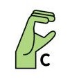
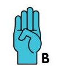
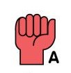

The current sign is: N/A



?
Quick user guide:
Press A to display the ASL sign for "A"
Press B to display the ASL sign for "B"
Press C to display the ASL sign for "C"
Press R to reset the program. You must do this after every successful test
Press T to test for the current sign. You must have the image of the corresponding asl sign on the screen in order to test for the sign